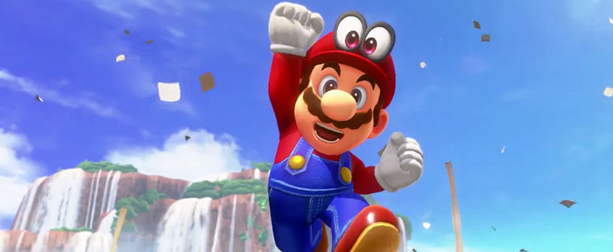
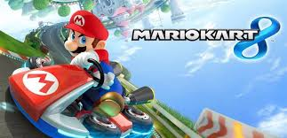

Nintendo 64 !
 La Nintendo 64 (ニンテンドウ64, Nintendō Rokujūyon?), également connue sous les noms de code Project Reality
À l'instar de la NES Mini et de la Super NES Mini3, la PlayStation Classic contient plusieurs jeux
préinstallés. Elle est 80 % plus petite que son modèle en termes de volume, dispose d'une sortie vidéo HDMI,
fonctionne avec deux manettes PlayStation de type standard reliées par USB et est alimentée via un port micro
USB.
La Nintendo 64 (ニンテンドウ64, Nintendō Rokujūyon?), également connue sous les noms de code Project Reality
À l'instar de la NES Mini et de la Super NES Mini3, la PlayStation Classic contient plusieurs jeux
préinstallés. Elle est 80 % plus petite que son modèle en termes de volume, dispose d'une sortie vidéo HDMI,
fonctionne avec deux manettes PlayStation de type standard reliées par USB et est alimentée via un port micro
USB.
Caractéristiques techniques
- Processeur central : "Reality Engine" NEC/MIPS VR4300, dérivé du processeur RISC 64-bits R4300i, cadencé à 93,75 MHz.
- "Reality Display Processor" (RDP), cadencé à 62,5 MHz
- Mémoire principale : 4 MB RDRAM unifiée (8 MB avec l’Expansion Pak)
- Reality Signal Processor" (RSP), 64 canaux, fréquence d'échantillonnage de 44,1 kHz, mémoire système
- Bande passante du bus mémoire : 562,5 MB/s.
- 4 MB à 64 MB.
- Dimensions : 149 x 33 x 105 mm.
- Poids : 170 g.
- Alimentation : 5V 1A micro USB.
- Affichage : 720p et 480p via HDMI.
Jeux que vous avez pas le droit d'oublier
Pendant des années certains jeux nous ont marquée, donc on à pas le droit de les oublier , toute les raclers effectuer sur mario Kart
Tout les fois ou on à preferer jouer a Zelda que d'allez a l'ecole , alala quel Tristesse et joie en même temps .
En voici la liste de quelque jeux de l'époque :
| Titre | Année | Editeur |
|---|---|---|
| Mario Kart | 1997 | Nintendo EAD |
| Super Mario Bros | 1997 | Nintendo EAD |
| Zelda/td> | 1998 | Nintendo EAD |